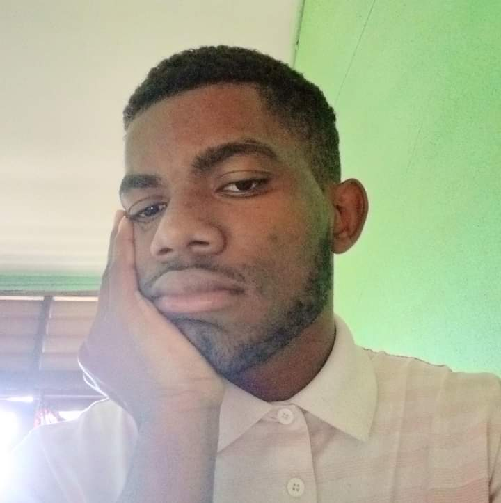
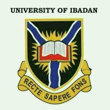

Ukie Emmanuel Chinedu

Summary
A medical student. Aspiring medical doctor; A tech enthusiast.
A perservering, and determine aspiring full stack developer who has laying his hand on many courses to achieve his goal.
A young man with zero experience in any work of life, but is willing to learn and if given the opportunity.
Education
- Primary Education: Ebonyi State University Nursery and Primary School. (2006-2011)
- Secondary Education: Ebonyi State University Secondary School. (2011-2017)
- Tertiary Education: University of Ibadan. (2019-present)

work experience
None
Skills
- Cooking
- Music vlogging
- Full-stack developer
Awards and recognition
none
Others
Hobbies
Contact